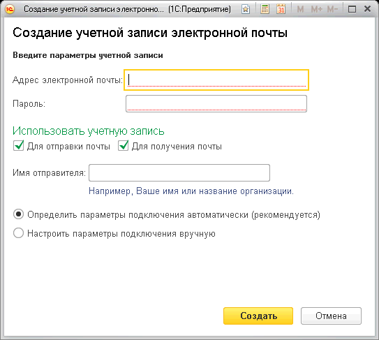
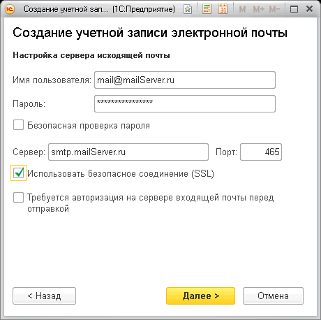
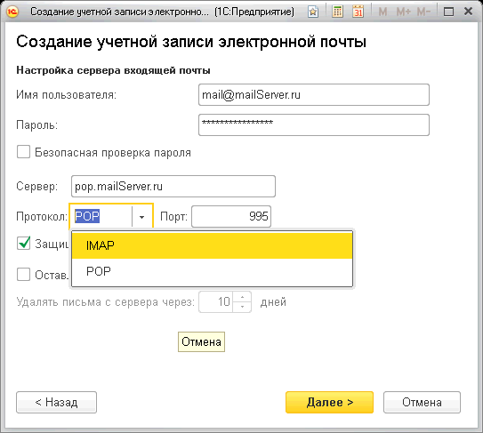
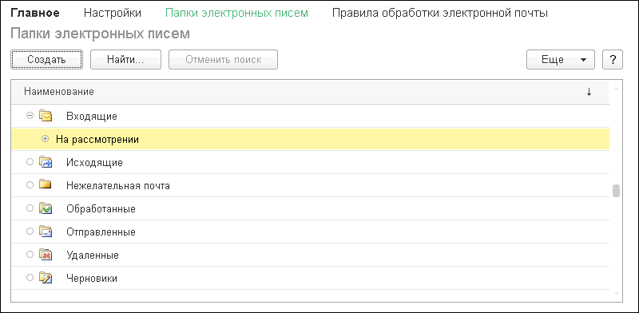
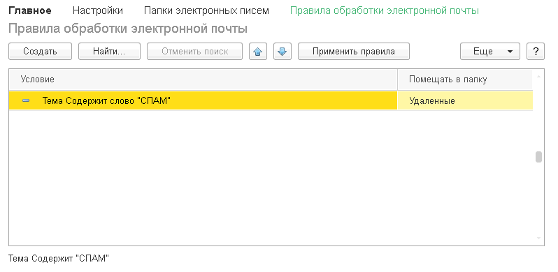
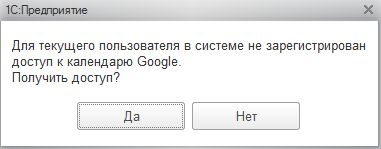
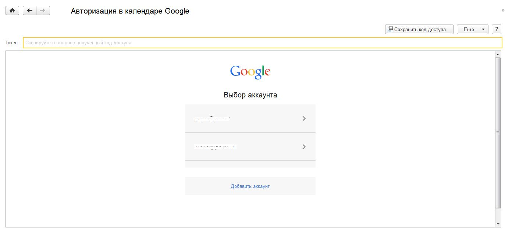
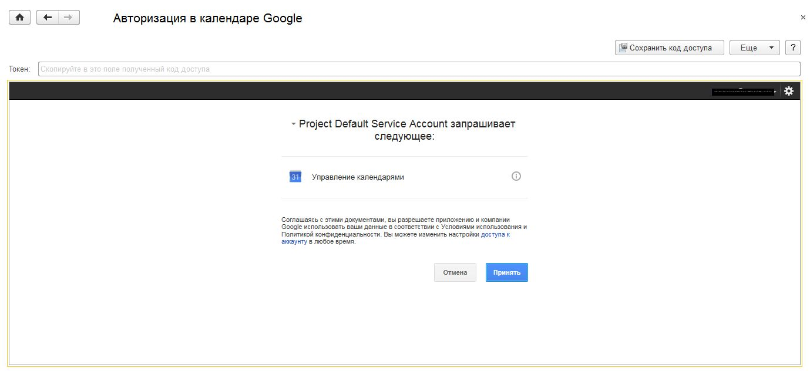
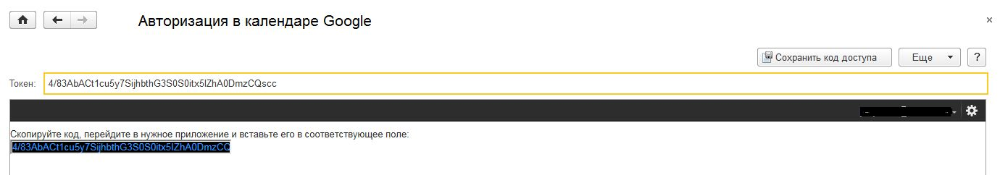
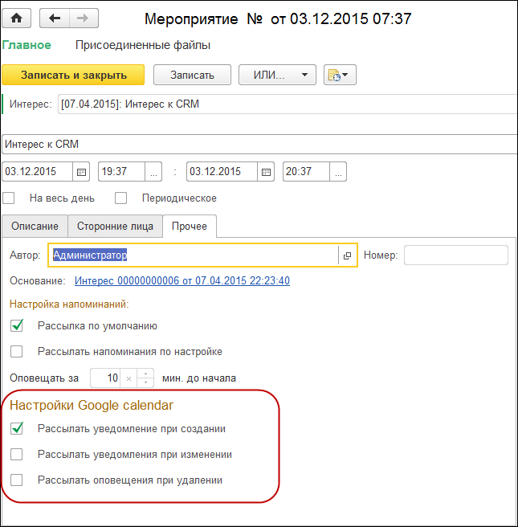

В решении "1С:CRM" предусмотрено разграничение прав доступа пользователей к информации. С одной стороны, это обеспечивает определенную степень информационной безопасности предприятия (пользователю доступна только информация необходимая для выполнения его задач), с другой - облегчает работу пользователям информационной системы (пользователь не видит лишней информации).
Для доступа к настройке прав нужно открыть карточку Пользователя. Следует учитывать, что настройка прав доступна только пользователям с правами администратора.
Нужно зайти в раздел «Настройки» - «Администрирование» - «Настройки пользователей и прав» - команда «Пользователи»:
В открывшемся списке пользователей нужно открыть карточку нужного и перейти в раздел «Права доступа»:

В конфигурации «1С:CRM» используется гибкая система настройки прав доступа – имеется предопределенный набор групп доступа, которые можно изменять и дополнять в режиме 1С:Предприятия используя профили доступа. Рассмотрим доступные группы пользователей, которые имеются в решении по умолчанию.
Администраторы – группа, дающая пользователю полные права в конфигурации. Служит для настройки, обслуживания базы данных, дает полный доступ к любым данным и объектам системы.
Секретари - основная группа всех пользователей, которые не занимаются продажами. Включает доступ ко всем каналам коммуникаций, просмотра базы клиентов, использования почты и календарей.
Менеджеры по продажам – основная группа для менеджера по продажам. Обладает всеми необходимыми правами для работы с клиентами, Интересами, Счетами, назначенными Задачами, Почтой и так далее.
Передача дел отвественному – расширяет возможности группы Менеджеров по продажам с частичной передачей прав по возможности закрепления клиентов за менеджерами.
Создание общих шаблонов документов - расширяет возможности группы Менеджеров по продажам или Секретаре. Позволяет организовывать шаблоны документов для общего использования при коммуникациях с клиентами.
Руководители отдела продаж – группа с расширенными возможностями Менеджера по продажам. Например, дает возможность просмотра и изменения задач других пользователей, просмотр показателей управления любых пользователей.
Маркетологи - группа включает полный доступ к клиенсткой базе и разделу Маркетинг.
Управление маркетингом - группа расширяет группу маркетологи для полного доступа к разделу Маркетинг сотруднику.
Коммерческие директоры – группа включает все права из группы Руководители отдела продаж и дополнительно позволяет получить доступ ко всему разделу связанному с маркетингом.
Управление бизнес процессами - группа включает все права по настройке, описанию и включению в работу бизнес-процессов.
Управление проектами - группа дает доступ к возможности планирования и выполнения проектов в решении.
Администрирование и НСИ – позволяет осуществлять настройку и редактирование нормативно-справочной информации, но без доступа к полным функциям доступным группе Администраторы.
Бухгалтера - позволяет выполнять обмен данными с учтеным решением, редактировать Счета на оплату.
Внешние пользователи(для анкетирования) - минимальные права для входа в решение. При ней закрыт доступ ко всем данным в решении, кроме документов анкетирования, которые назначены для пользователя. Выполняет функцию личного кабинета для внешних пользователей.
Импорт из файлов – разрешает импорт данных из внешних файлов (клиентов, номенклатуры).
Отправка SMS сообщений (дополнительный) – отдельная роль для возможности отправки SMS-сообщений из системы.
Синхронизация данных с другими программами - Дополнительно назначается тем пользователям, которым должны быть доступны средства для мониторинга и синхронизации данных с другими программами.
Установка цен товаров и услуг (дополнительный) – отдельная роль для редактирования цен.
«Отчет по правам доступа» дает администратору возможность просмотреть полный список прав пользователя.
Настройка учетных записей электронной почты
Для создания или настройки учетных записей нужно зайти в раздел «Настройки» «НСИ» - команда «Учетные записи электронной почты»:

Создание новой учетной записи выполняется при помощи мастера, облегчающего и ускоряющего процесс создания.
 
Пользователю необходимо только ввести регистрационные данные почтового ящика и в большинстве случаев система сама определит и заполнит все остальные параметры. Если все же автоматическое подключение не удастся, то можно настроить все параметры вручную:

Поддерживаются протоколы POP3 и IMAP, а также SSL.
Далее в созданной учетной записи настраивается список пользователей, имеющий доступ к письмам этой записи.
По команде «Папки электронных писем» можно перейти к списку папок и добавить свои в дополнение к типовым папкам:

Система позволяет также задать правила обработки писем. Например, автоматическое разнесение входящей почты по различным папкам в зависимости от адреса отправителя, или какого то слова/фразы в теме письма. Настройка условий гибкая и позволяет задавать сложные условия отбора писем.

Правила можно применять и к текущим, ранее полученным письмам, а не только к новым входящим. Для этого служит кнопка «Применить правила».
Только те учетные записи, в которых прописан пользователь, отображаются в Почтовом менеджере.
Cинхронизация с календарями Google
Данный механизм позволяет:
Синхронизировать календари пользователей между собой в режиме реального времени для создания единого информационного пространства в компании;
Возможность работы на мобильных устройствах, поддерживающих обмен с календарями Google и отображением этой информации в текущей информационной системе.
Для подключения синхронизации Мероприятий CRM с календарем Google необходимо выполнить ряд настроек:
Перейти в раздел "Настройки" - "Настройка системы" - команда “Сторонние сервисы”, включить настройку “Использовать синхронизацию с календарями Google”

Рядом с включением настройки, указать адрес электронной почты в поле “Учетная запись получения оповещений GAPI”, на который будут приходить письма-оповещения об изменении в календаре Google. Указанный адрес является общим для всех пользователей
Важно! Данная почтовая учетная запись будет использоваться как служебная и она не предназначена для работы с почтовыми сообщениями (т.е. она не должна использоваться у других пользователей информационной базы). Почтовая учетная запись должна отвечать следующим требованиям:
- Не использоваться пользователями в качестве рабочей почтовой записи.
- Провайдер учетной почтовой записи должен позволять удалять письма из неё (например, в GMail это действие запрещено, а в yandex.ru, mail.ru и многих других разрешено).
Необходимо убедиться, что включено и настроено расписание у регламентного задания "Синхронизация календаря Google".
Необходимо убедиться, что при использовании решения в клиент-серверном варианте на компьютере, где установлен сервер 1С:Предприятие 8, имеется доступ к сайту, который позволяет синхронизировать календари, а именно pushtest.rarus.ru. В файловом варианте использования решения, доступ к данному сервису должен быть прописан на каждом компьютере с которого планируется запускать решение 1C:CRM. Без доступа к данному сервису НЕ будет работать синхронизация Календарей из Google в 1C:CRM.
Для использования синхронизации у конкретного пользователя, необходимо в разделе "Настройки" - "Сервис" выбрать команду "Персональные настройки пользователя". Данная команда доступна всем пользователям, т.к. она настраивается индивидуально каждым из пользователей. Далее на закладке “Настройки” нужно раскрыть группу “Google”. В данной группе необходимо для настройки “Синхронизировать календарь с Google” установить значение "Да".

При первом включении пользователю будет предложено получить доступ к календарям Google пользователя. При отказе пользователя от регистрации доступа, синхронизация с календарем Google будет недоступна.

Для получения доступа системы 1С:CRM к календарям Google , пользователю необходимо пройти стандартный процесс авторизации в аккаунте Google:

Для получения кода авторизации необходимо подтвердить согласие на управление календарями Google:

После успешного прохождения авторизации, пользователь получит код, который необходим для доступа к календарям Google из системы CRM. Этот код необходимо вставить в специальное поле “Токен” и нажать на кнопку “Сохранить код доступа”:

Далее из ниспадающего списка необходимо выбрать один из доступных календарей Google и сохранить изменения в настройках пользователя.
При успешной настройке синхронизации, на почтовый ящик, указанный в общих настройках решения в поле “Учетная запись получения оповещений GAPI” поступит письмо-уведомление об успешно созданном канале синхронизации с календарем.
В форме Мероприятия на закладке Прочее появятся настройки уведомлений при работе с Google календарем:

Мероприятия, введенные в 1С:CRM будут автоматически выгружаться в Google. Мероприятия, созданные в Google, будут загружаться в 1С:CRM при работе регламентного задания «Синхронизация календаря Google».